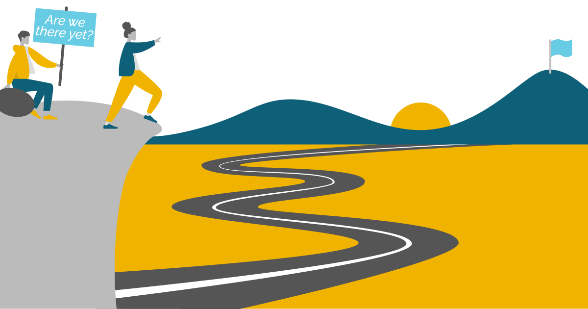

What’s it all about?
One stipulation of NSF POSE funded projects like this one was to conduct several interviews under NSF’s I-CORPS program (Winter 2024 Cohort), to gather information as to how data.table as an open-source project can improve and remain sustainable. For four weeks starting on the 17th of January, I conducted a total of 60 interviews with R Users and data.table contributors. Issue#5880 on the data.table GitHub mentions this, and has a link to the Google Doc that contains the list of people interviewed.

Project PI Toby Hocking assigned me to do these interviews and serve as the EL (Entrepreneurial Lead) for the data.table team. In addition to the interviews, this position involves tasks such as making and giving various presentations. Having successfully completed the program and conducted the interviews, it’s time to share the insights I gathered from them as a source of open-ended knowledge for the community.
But before you head below to read those parts, I would like to convey a big Thank you! to everyone who took part in this; from making availability and scheduling, to providing comprehensive feedback, and all the while being extremely communicative. I sincerely appreciate it. Not just for the value of your insights brought to the table, but also for being great people to talk with in general!
Selected Quotes
We begin with some direct (anonymous) quotes from the interviews giving positive feedback and general statements about data.table.
“
data.tablewould be one of the few arguments (in addition to Shiny) that I could bring forward to make people use R instead of Python”
“Using
data.table, it becomes easier to read, manipulate, and represent data in a more appropriate way for my needs”
“If I give my script to somebody, knowing that only
data.tableneeds to be installed is reassuring”
“I like it for minimalism and since it’s backward compatible with
data.frame”
“
data.tablewas small enough to put my data into RAM (noticeable copy reduction compared todplyr) and do analyses on my old laptop”
“Very convenient to operate on lists as columns, wherein the base structure in which
mlr3is programmed around is in essence, adata.table”
“Not something I’d recommend to everyone because of its peculiar syntax, but once you are used to it, I believe it can be very expressive while reducing lines of code dramatically”
“I’m happy to see the community mobilization around this package since it brings such a valuable contribution to base R and is used by so many other packages.”
“All the
f-xyzfunctions are super useful. For example, it takes ages to read a big CSV withread_csv, while usingfreadsometimes doesn’t even allow me to grab a cup of coffee :)”
Next we will summarize some consistent themes that will help guide the grant moving forward.
Theme 1: Contribution of package development
The first theme of the interviews was what values motivate people or prevent people in contributing to the data.table project. These varied from person to person, but I summarize a few common answers below.
Positive motivations
For work reasons, wherein their core goal is to help maintain their own software/package (downstream dependencies) by contributing back.
For visibility or for employment where
data.tableis a required/preferred tool of trade, and adds to their CV.Using the software for not just work but for a personal project of interest where they derive usefulness from functions exported by
data.table.Making one a better programmer. This comes to be not just by contributing directly, but also by learning from others’ contributions.
Trying to be a part of the
data.tablecommunity, wherein the feeling of being a part of something big and crucial tends to be in play here. Making connections in the open-source community also tends to be an attraction.Financial gain or incentives from working on the project. None of the people interviewed were paid to do so, but nearly all of them agreed that a paid position could be a win-win for the interested ones. For example, the author of
data.table, Matt Dowle, was able to work on the package as part of his previous paid position at H20.ai.
Barriers
Not being a heavy user of the package. To both be reliant on active maintenance of the currently offered functionality and to see the value of time invested in contributing, one has to use
data.tableoften enough - something not everyone does. The pressing need to rely on the tool needs to be existent for some to contribute.It is not something they use in their current toolchain. This specifically applies to the people who were former contributors or users - For them
data.tableis a technology they used in the past for their former work/interests, and not something they require to or would consider using for their job at present. For some, they might need an entire career switch to even use R as well!Lack of professional motivation and brevity. Some users are tightly occupied with work and do not have the time to contribute to open-source projects, let alone
data.table(would be an addition to their list of competing priorities). For the few who do, they choose not to contribute either due to the lack of incentive, or due to the lack of motivation, primarily fueled by them thinking their contributions would not be satisfactory in comparison to what they would usually contribute to for the products they develop for their job.The feeling of not having adequate knowledge to make meaningful contributions. For a handful, the codebase is overwhelming, and/or they are new to GitHub itself and not sure where to start digging, and/or they are not used to working with that type or level of code in R.
Lack of C programming knowledge. Although at the surface there is R, the core still has C and thus a fair proportion of the people interviewed mentioned that their inexperience with the language is one reason that holds them back from making contributions (especially ones that involve diving a bit deeper).
Time in between submission and merging of a PR being rather long. This resonated with a few who contributed in the past, and some were just concerned for the ones who have or are contributing, as they may opt out of future contributions if their pull requests are left hanging for a long time. Given that it takes time to be thorough with changes introduced in pull requests (PRs), there is room for understanding if they are not merged timely or fast enough since in the long run, unintended consequences are always a possibility after the foreign code has been integrated (might break stuff and make it harder to debug later on). People do feel that taking the quick and easy route in merging PRs (especially big ones) can be challenging or that contributors and reviewing volunteers have limited time, however, they also think it can be faster (especially if more people are involved) and massive delays (ranging from several weeks to months) can be avoided. (especially since people would also lose context regarding their contributions and would need to revisit the discussion as a whole)
Some users find the tone in the wording used to bring in people to be close-ended. They would be inclined and interested to contribute if the available reading material (such as the FAQ and Readme) is more inviting and friendly.
Diversity and inclusion: For many, English is not their primary language, and a fair amount of jargon exists while going in the vignettes and documentation. The inclusion of more people through translations would be something to look forward to. A few also referenced wanting a welcoming culture in contribution. A broader approach might be required for newcomers to open issues and pull requests. Additionally, people tend to adopt the ‘contributor mode’ when sought upon - simple things like making it explicit on the GitHub repository that contributors are needed can pull them towards deciding to push a change.
Summary and Takeaways
Section added by Kelly Bodwin
Based on these findings, we on the grant team see three major directions for encouraging more contribution to data.table:
Use in projects: Interviewees reported adding their own functionality to
data.tablebased on needs in personal or work projects. Others cited their own lack ofdata.tableuse as a reason not to be more involved. The more we can encourage practical adoption ofdata.table, where it can be useful to users, the more contribution we will see from users.Feeling of community and culture of inclusion: This is already a focus of the grant project, and it is great to hear that this is already valued by the users and community members! We hope to vastly expand the beginner-friendliness and language diversity of documentation.
Beginner-friendliness and support: Interviewees reported not having the programming skills to add to
data.table. Going forward, we hope to better denote and emphasize the areas of contribution for less experienced programmers, and to provide more supporting resources for new community members to learn about the structure of the package.Financial and professional benefits: Contributors report that developing for
data.tablehas positive impact on professional development and hireability, and that they would welcome financial incentives as well. I believe we should experiment with structure that help support our developers in concrete ways.Pull Request process and timeline: We believe that the newly established Governance Document for the package will help clarify and streamline the contributor process for the future.
Theme 2: Adoption of data.table
The second theme is what drives people to be regular users of the data.table package. We mostly focused on barriers to adpotion.
Individual reasons to not adopt
People cited various reasons for not utilizing or transitioning to data.table:
Low rationale to switch to
data.tablewhen dealing with small datasets. In comparison to other R packages that achieve the same functionality, notable efficiency is mostly observed when the data being dealt with is considerably large (wherein the operations performed on them scale well to see a visible difference).On the flip side, there are rare cases where people found
data.tableto be not scalable enough, and instead use database tools likeDuckDBfor their datasets which are increasingly larger than memory. (Some mentioned that making operations work on-disk would be something to look out for and implement in the future). An intermediate solution for them here would be to have a syntax translator tool that would translatedata.tablesyntax to SQL queries, similar to whatdbplyris fordplyrcommands, as they prefer thedata.tableway to write code and only require things to be more scalable.Not enough resources online to learn
data.tablein an easy yet detailed manner. This comes in stark contrast to abundant resources available for topics such asdata.frameanddplyrfor instance.Lack of an integration with
tidyverse.Not working with a group of collaborators/coworkers who primarily use
data.table.For a handful, the syntax does not come to be natural although they potentially benefit from the speed. They would stick to
tidyverseor Base R in terms of being easier to use, unless they are running big computations where time is key.Some feel that
data.tablerequires a certain level of understanding and experience in R prior to using it. They believe that it isn’t easy for newbies to adapt reasonably quickly, with regards to their own experiences in learning it. For reasons discussed above again, people with beginner-level experience in R or not enough reason to have code be the most efficient tend to stick with easier-to-use packages and functions, which is especially common in entry-level data science courses.
Areas of improvement
Specific areas were identified by the interviewed population, including regular users, that they would like to see improvement in or be worked upon.
In terms of technical improvements:
People miss
freadbeing able to read fixed-width files, although there isiotoolsnow.An R core member gingerly pointed out that after several years of abundant reports of installation problems on MacOS,
data.tablestill shows as being unable to detect OpenMP support and use multiple threads on the platform (while the same is not prevalent on Windows or Linux), even after including OpenMP run-time in CRAN R releases specifically fordata.table. I noticed the same issue too on OS X being prevalent till date (and it has been there for a while as it appears, as I first encountered it more than two years ago).Few desired additional functionality for working with spatial geometries and mixed-model packages (such as
glmmTMBandlme4).Some people found using the Walrus operator to be weird, especially given that not every
data.tableoperation requires that. They don’t like keeping in mind the names of columns (they tend to move towards the set function for explicitly assigning) as well. The in-place assignment using:=is acceptable as they feel, but they would ideally want to be able to doDT$x <- ymeaningDT[, x := y].dataset[get("categoricalColumn")]could be optimized further (for reference, please check getDTeval or this paper).A few people find the syntax of
dcastandmeltto be confusing, and often end up making mistakes since those reshaping operations complement each other (long to wide and vice versa respectively) or are the reverse. Probably not best to change this given it would break things and is just something to be learned over time, but more examples might help.More often a mild inconvenience than a common source of error, but to a few, the masking of functions from other packages (such as
between,first, andlastfromdplyr, ortransposefrompurrr) is something they do not like.
In terms of the community revolving around data.table:
Documentation tends to be lacking, i.e. not enough well-documented
data.tableresources or online materials (blogs/articles, videos) exist. Even experienced developers feel that it isn’t entirely straightforward to find out how to do more complex things, so more extensive documentation and examples would be great, if not a necessity. Things that read as friendly and expressive while maintaining details are a go-to. Making the existing documentation more lucid and navigable is another point mentioned by a few.More involvement is required on Stack Exchange or QA-oriented platforms that programmers and alike frequent. People mentioned that when they are looking for answers on Stack Overflow for questions that they come across in R, they find that
data.table-based answers are lacking compared todplyr.More edu-centric approaches need to be undertaken. Most educational institutions do not resort to having
data.tableas part of their curriculum in R-based courses. While the coursework tends to be easier for newcomers, having more resources accessible can help people learn the more optimized version right from scratch and avoid learning it in the long run (almost all of the interviewees had to exploredata.tableon their own!) when efficiency or just the concise way of writing things is found to be better for some. Thus, it might help if instructors can start incorporating lessons using the package.
Summary and Takeaways
Section added by Kelly Bodwin
Education and Resources: It has been clear from the outset of this project that
data.tablecould benefit from a lot more documentation, guides, tutorials, etc. This is always a tough issue, because creating such materials can be a thankless task with not a lot of concrete payoff. However, thanks to the grant, we are able to fund time for this project! Expect good things on the horizon in this category.Syntax and the R sub-languages: The diversity of R syntax is a blessing and a curse, and everyone has their favorite sytax style, from
tidyverseto formula style to Base R todata.table, and every combination in between. Ultimately, our goal should be to be as flexible and possible and offer ways fordata.tableto interface smoothly with other styles, without losing it’s core syntax structure and personality! (dtplyrandtidyfastare lovely examples of such interfacing.)Applicability to the problem at hand: This is an interesting one. Can we do better at defining what dataset sizes and types are the best use cases for
data.table? Can we provide more options for interfacing with databases, so that users can perhaps pull data using database tools, but analyze on-disk withdata.table?
Theme 3: Open-source sustainability
Finally, we asked interviewees what might be necessary to give data.table long term sustainability.
Developers and maintainers of packages dependent on
data.tablesaid they would be concerned if it was no longer maintained. Most of them said they don’t have the resources to maintain a fork and can’t depend on something that’s not developed as much. They would be happy to sponsor and help sustain the project.Even if
data.tablewere to go into maintenance mode, people would continue using it as long as the existing functionality isn’t broken.Occasional users are not keen to become contributors. Heavy users are but would likely step back at one point. Any external contributors (non-users with generic contributions) are not sustainable. Most people were of the opinion that there will always be an influx of contributors given that
data.tableis a prominent package in the R ecosystem. Thus, stability can be achieved by a set of core (active) members plus a constant inflow of newcomers or periphery (drive-by) contributors.Community growth tends to be crucial in the long run, as people recognize that motivations to contribute are fluid and subject to change in the long run (career changes or simply switching to a different focus at some point in time). It becomes essential for maintainers to share knowledge to help onboard new active contributors, and for others to connect with them (a peer network is mutually beneficial).
Academia is one source for bringing in contributors, as professors or researchers can pay people to do services or research work. People believe there might be ample spare money from grants or educational funding.
Becoming part of a foundation or community can help to share struggles and grant opportunities.
Big companies look for people who are experts in a tool they use. Since
data.tableis in demand for data science and related roles in the job market, this might potentially bring in more contributors to learn and be good at the software.GitHub Sponsors is a convenient way for people on GitHub to fund the project. Individual developers and maintainers of
data.tablecan have their pages as they deem necessary, or some other source of sponsorship (such as Patreon or Buy Me a Coffee).A fair proportion is willing to contribute to such a central fund. As for how and to whom will these funds be dispersed, or what would be a good way to distribute them proportionately, remains a question.
Summary and Takeaways
Section added by Kelly Bodwin
I don’t have much to add to this one - it’s clear that we need more support structure for open-source maintenance, whether from private sources or public grants or community sponsorship.
Ani’s Roadmap

Here is my list of ideas to potentially do or keep in mind for the agenda going forward:
Creating a GitHub Sponsors page for the Rdatatable organization.
Applying for funding from organizations such as NumFocus (5675) and being a part of communities such as rOpenSci.
Applying for R Consortium grants, and using Kickstarter crowdfunding if required (for project maintenance and implementation of complex features) in the long run.
Getting people involved in
data.table-based projects for Summer/Winter of Code programs, such as Google Summer of Code (Interested? Check our page for this year if you would like to apply or take part!).Brainstorming and organizing Hackathons to spur interest, or some form of
data.table-based events (like how tidy-dev-day exists for tidyverse).Promoting
data.tablevia conferences and open-ended blogs/articles, showcasing its features and benefits of adoption.Creating videos and interactive tutorials.
Classifying more of issues (if applicable) that fall under or are labelled as ‘beginner-task’.